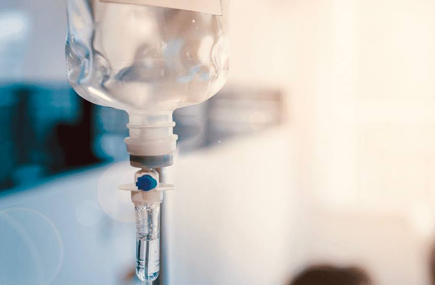

+380(97) 369 76
65
+380(97) 369 76
65Капельница от алкоголя
Капельница от алкоголя - лучший метод борьбы с интоксикацией
Работаем в Одессе, Киеве, Львове, Харькове, Днепре, Запорожье


Бесплатная консультация, работаем круглосуточно 24/7
Капельница от алкоголя - лучший метод борьбы с интоксикацией
Работаем в Одессе, Киеве, Львове, Харькове, Днепре, Запорожье
Капельница от алкоголя - это совокупное название комбинированной инфузионной терапии , которую использует врач нарколог для эффективного лечения острой алкогольной интоксикации. Пристрастие и патологическая тяга к алкогольным напиткам – является большой проблемой взрослого населения Украины, любое употребление алкоголя всегда сопровождается интоксикацией. Даже небольшие дозы алкоголя могут вызвать головную боль, тошноту и рвоту, тремор рук, бессонницы, боль в животе и сердце.
“Прокапать от алкоголя” - это народное название которое подразумевает очистку крови от алкоголя и токсинов с помощью инфузионной терапии. Прокапать от алкоголя может врач нарколог в медицинском центре или на дому. Прокапаться от алкоголя нужно в случаях когда пациент употребил единоразово большую дозу алкоголя или находится в длительном хроническом употреблении (запои) состояние которого сопровождается симптомами сильной интоксикации.
Капельница от алкоголя нужна людям состояние которых требует срочной медицинской помощи а так же тем кто имеет алкогольную зависимость и не может самостоятельно выйти из состояния запоя. Капельница от алкоголя является универсальным методом лечения как интоксикации так и самой зависимости. Лечение алкогольной зависимости начинается с капельницы для снятия интоксикации.
В состав капельницы от алкоголя часто входят:
Важно понимать что состав капельницы всегда отличается мы описали только препараты которые часто используют врачи наркологи но выбор препаратов для лечения всегда остается за доктором.
Для капельницы от алкоголя нарколог использует:
Прокапаться от алкоголя дома или в стационаре - поставить капельницу от алкоголя может врач нарколог как дома так и в стационаре. Прокапаться от алкоголя это старый и высокоэффективный метод снятия алкогольной интоксикации с помощью которого можно выйти из любого запоя. Но стоит помнить если вы хотите прокапаться на дому то для оказания квалифицированной помощи нужен опытный психиатр-нарколог который имеет опыт работы в реанимации или скорой помощи , только все эти критерии могут гарантировать плавный и безопасный выход из любого запоя.
Капельница после алкоголя - является золотым стандартом снятия интоксикации любой сложности, но нужно понимать что капельницу после алкоголя можно ставить не раньше чем через два часа от последнего момента употребления алкоголя. Исключение можно сделать в случаи если пациент нуждается в экстренной медицинской помощи. Капельница после алкоголя - единственный правильный метод начала лечения алкогольной зависимости независимо от стадии и формы заболевания. В Украине пациент поступающий в наркологическое отделение с признаками острой или хронической алкогольной интоксикации должен получить в первый час поступления - капельницу после алкоголя с целью облегчения общего состояния а так же восстановления всех органов и систем.
Самое главное преимущество капельницы от алкоголя в сравнении с таблетированным лечением это ее высокая и быстрая эффективность. Длительность капельницы от алкоголя для снятия алкогольной интоксикации занимает от полутора до двух часов под контролем квалифицированного врача нарколога.
Ключевые преимущества капельницы от алкоголя является:
Что бы прокапаться от алкоголя нужно обратиться к врачу наркологу или наркологический центр. Дежурный врач проведет консультацию и первичное обследование а так же проведет квалифицированное лечение с дальнейшими рекомендациями.
Что бы поставить капельницу от алкоголя в Украине вам нужно позвонить по номеру 050-021-69-57.
Цена на капельницу от алкоголя в Укарине начинается от 1499грн. Цена может меняться в зависимости от стадии алкоголизма и длительности запоя.
Капельница при алкогольной интоксикации стала самым доступным и эффективным методом в лечении алкоголизма. Капельница при алкогольной интоксикации не только нормализует общее состояние больного но и предотвращает последующее употребление спиртных напитков так как с помощью медикаментозной терапии удается добиться снижения патологической тяги а так же введением пациента в длительную трезвость.
Стоить помнить что капельница от алкогольной интоксикации имеет высокий детоксикационный эффект и быструю биодоступность но не используется при выводе пациента из запоя . Состав капельницы от алкогольной интоксикации и вывода из запоя на дому или стационаре всегда отличается.
Мы предлагаем высокоэффективный метод лечения алкогольной интоксикации под контролем квалифицированных врачей с элементами европейских протоколов. Капельница для снятия алкогольной интоксикации принята самым лучшим и безопасным методом в лечении любой стадии алкогольной зависимости.
Снятие алкогольной интоксикации является постоянным и обычным делом нарколога , снятие алкогольной интоксикации происходит в разы проще чем вывод из запоя в стационаре или на дому и как правило манипуляцию проводят пациентам не страдающих на алкогольную зависимость. Любая алкогольная интоксикация может быть условно жизни угрожающим состоянием и требует врачебного вмешательства.
Капельницу от алкоголя могут поставить в наркологическом центре либо на дому в случаи если тяжесть интоксикации не выше средней. Капельницу от алкоголя может ставить только врач нарколог после полной оценки сложности и длительности запоя:
Что бы поставить капельницу от алкоголя в Украине вам нужно позвонить по номеру 050-021-69-57.
Лучшим решением будет поставить капельницу с детоксикационными растворами , витаминами , гепатопротекторами а так же легкими седативными препаратми.
Стоит помнить что лечение любой алкогольной интоксикации с помощью медикаментов или же народными средствами может привести к ухудшению общего состояния, не стоит заниматься самолечением , вывод из запоя это работа врачей наркологов которая требует определенной подготовки и квалификации.
Чтобы вызвать врача нарколога вам нужно позвонить по номеру 050-021-69-57
Анонимно

"Ну в хлопців просто золоті руки й світла голова, мене капали Олексій та Владислав, буквально за декілька сеансів я наче заново народився, до цього пив більше 3х тижнів, не міг зупинитись, дуже радий що знайшов саме цих спеціалістів, всім рекомендую"
Анонимно
"В течение нескольких лет я злоупотреблял алкоголь, что привело к увольнению с работы и вызвало у меня мысли о суициде. Понимая, что такой образ жизни неприемлем, я обратился за помощью в клинику "Амбрела". Здесь я смог преодолеть свою зависимость от спиртного благодаря заботливым и опытным врачам, а также эффективной системе лечения. Спустя более года я полностью избавился от желания употреблять алкоголь, и теперь моя жизнь вернулась в норму. Я даже не приближаюсь к спиртному! Благодарю врачей клиники "Амбрела" за их помощь и заботу."
Анонимно
"Я обращался за помощью в различные клиники, пытаясь избавиться от своей зависимости от алкоголя, но без особых успехов. Никак не мог справиться с желанием прибегнуть к бутылке, пока друг не посоветовал мне обратиться в центр "Амбрелла". Я записался на прием и был поражен заботливым отношением к пациентам. Уже прошло два года, и теперь я смотрю на алкоголь с абсолютной равнодушием, активно занимаюсь спортом и улучшил отношения в семье. Благодаря центру "Амбрелла" моя жизнь была спасена от алкогольной зависимости!"
Анонимно

"Хочу выразить свою благодарность врачам из центра алкоголизма "Амбрела" за то, что они буквально спасли мою жизнь. В течение последнего года я сильно увлекался питьем, и все это привело к катастрофическим последствиям. Хотя я ходил на терапевтические сеансы, но безрезультатно. Тогда я нашел адрес клиники "Амбрела" в интернете, изучил отзывы и информацию о центре, и записался на прием. Там мне сразу предложили методику лечения, которая помогла не только справиться с физической ломкой, но и психической зависимостью от алкоголя. Не буду распространяться, скажу только одно - после пребывания в этой клинике я стал другим человеком, и навсегда забыл, что такое привкус алкоголя. Больше меня не тянет на это! Я искренне верю, что в центре "Амбрела" трудятся настоящие целители душ!"
Анонимно
"После сложного развода мой сын начал подавлять свою обиду и горе употреблением алкоголя. Он старался скрывать это от меня, но я, как мать, почувствовала, что что-то не так. В конечном итоге, ситуация стала критической. Моя знакомая посоветовала мне обратиться в клинику "Амбрела". Я была приятно удивлена их работой! Они помогли сыну преодолеть очередной период злоупотребления алкоголем, и с тех пор прошел уже более года, и он совсем не пьет."
Анонимно
"Благодаря вашей помощи, моя семья была спасена. Я с трудом уговорила мужа начать лечение, и последний каплей был пьяное ДТП. К счастью, в аварии никто не пострадал, но это был для него сигнал к действию. Он наконец согласился пройти курс лечения на дому, в стационар не хотел ложиться. Лечение было трудным, и были моменты, когда срыв был настолько близок, но благодаря вашему центру Амбрелла мы справились с этим."
Анонимно
"Для меня эта клиника стала настоящим спасением! Долгое время я упорно отказывался от лечения, уверен был, что со мной все в порядке. Но к счастью, семья уговорила меня попробовать. И сегодня я чувствую себя невероятно счастливым, осознавая, что мне абсолютно не нужен алкоголь. Огромное спасибо за помощь и поддержку, которые я получил здесь! Я благодарен вам за новую возможность жить полноценной и счастливой жизнью!"
Анонимно
"Выражаю благодарность ребятам, которые оказали мне помощь и не отвернулись. Уже 10 месяцев я остаюсь чистой. Благодарю за то, что помогли найти новый путь в моей жизни."
Приезд в течении 60 минут от момента поступления заявки
Наши филиалы есть во всех больших городах Украины.
Мы оказываем профессиональную доказательную медицинскую помощь. Гарантией является наше имя.
Номер телефона:
+380 (97) 369 76 65
+380 (50) 021 69 57
Адрес главного офиса: г. Одесса Армейская 18/1
Офис вашего города нужно уточнить
Работаем в: Одессе, Киеве, Львове, Харькове, Днепре,
Запорожье
Telegram: t.me/umbrellaplus
График работы: Круглосуточно